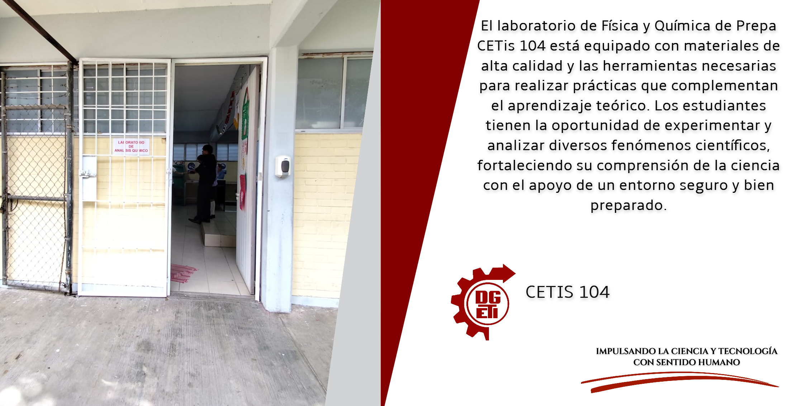
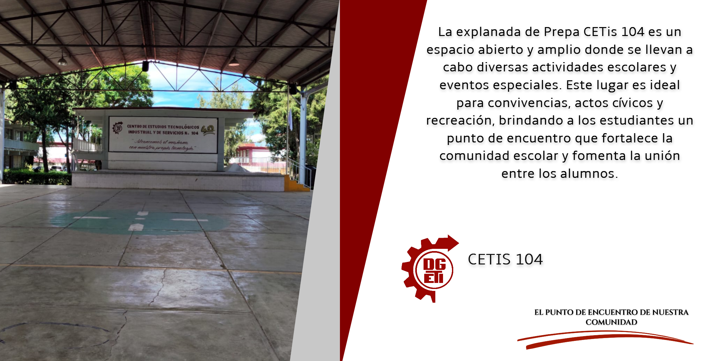
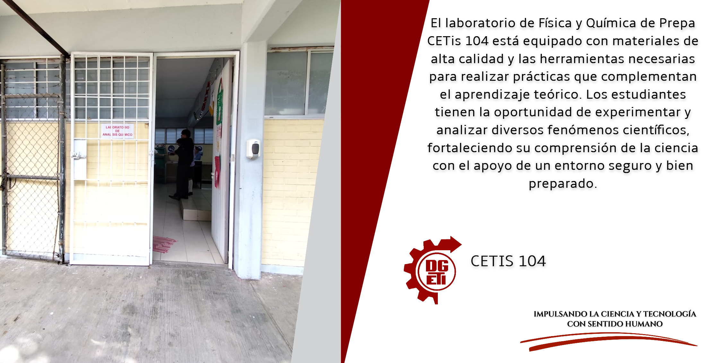
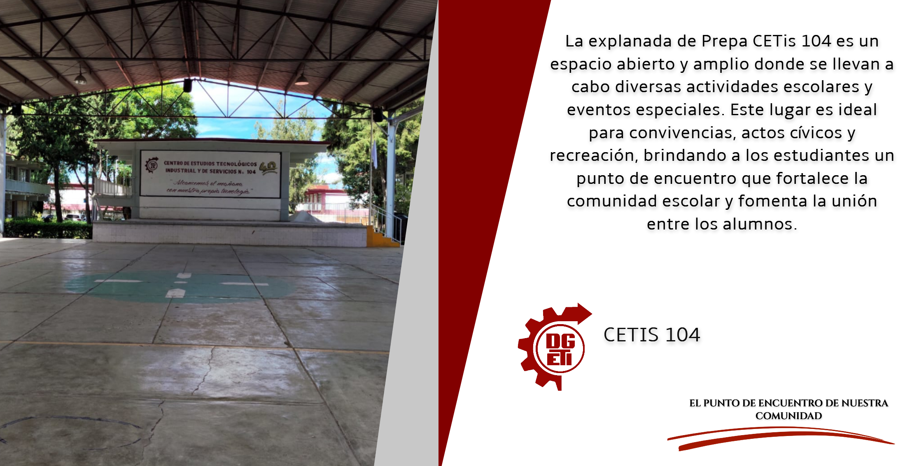
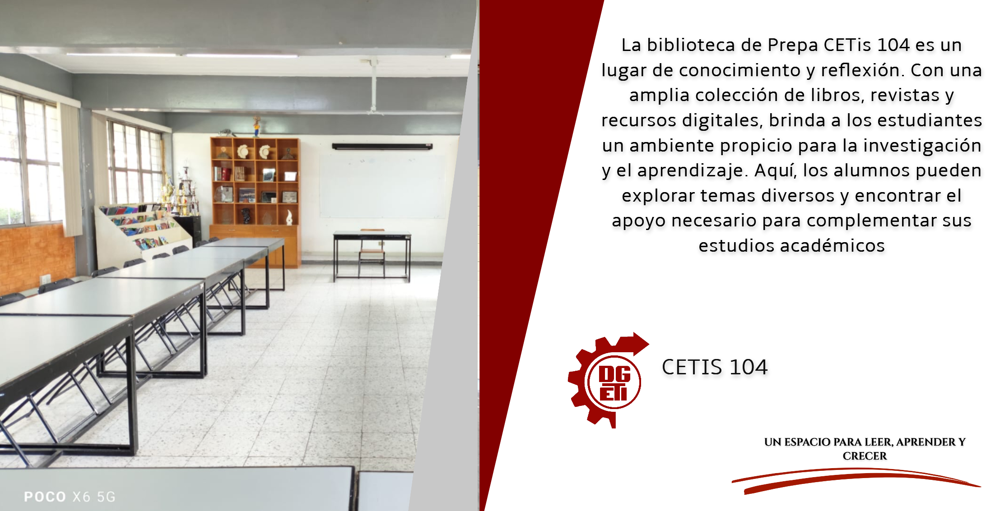
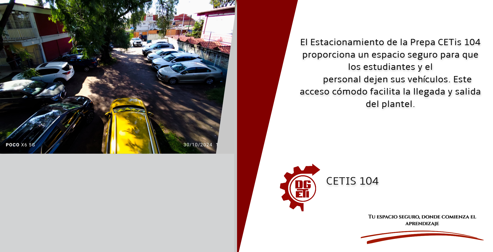
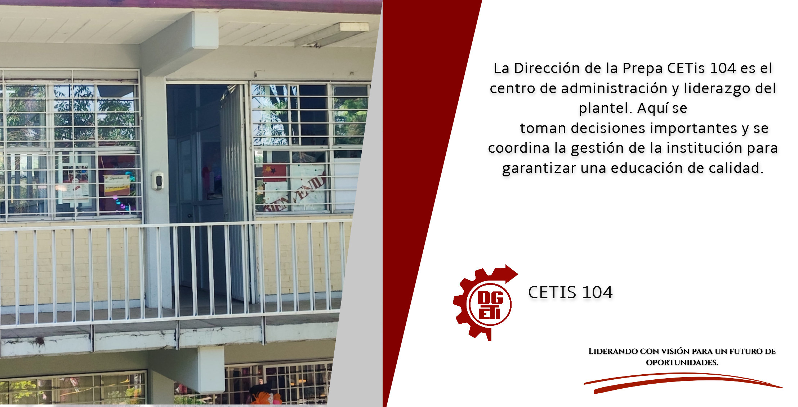
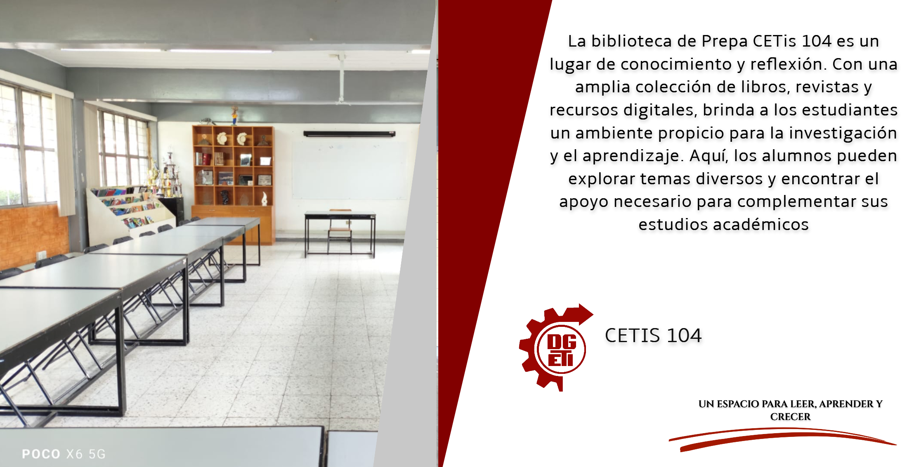
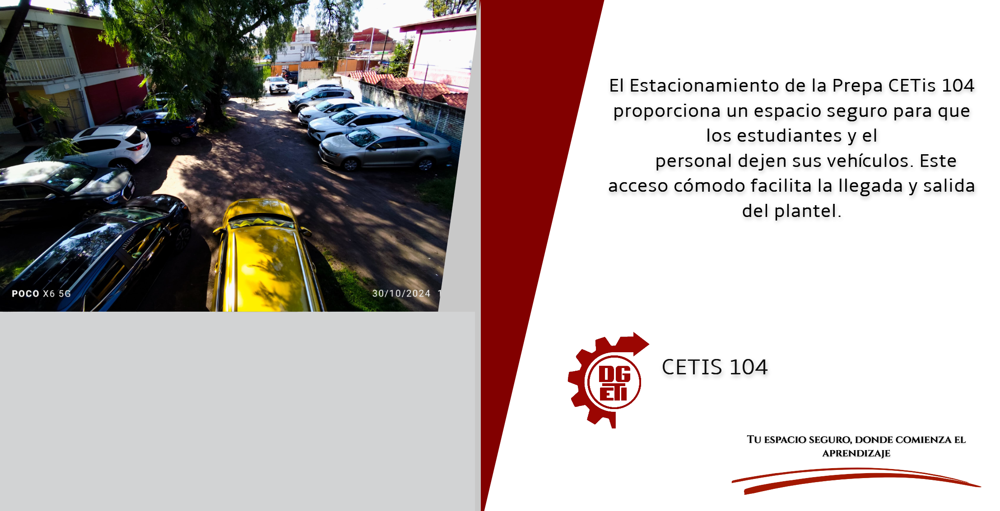
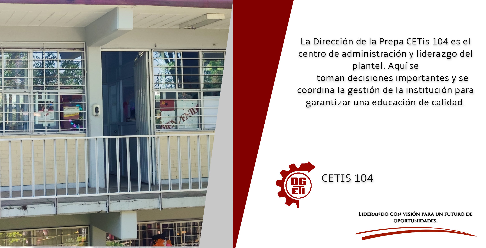

! Por favor Rota tu Telefono o Tableta para ver mejor la imagen
A continuación, se presenta una pequeña imagen que ilustra todos los lugares del plantel, señalados de manera clara para facilitar su identificación. Los elementos están distribuidos por pisos y categorizados con colores para diferenciar su ubicación:
Los elementos marcados en color verde corresponden a los que se encuentran en el primer piso del plantel.
Los elementos marcados en color azul celeste corresponden a los que se encuentran en el segundo piso del plantel.
! Por favor Rota tu Telefono o Tableta para ver mejor la imagen


 





 




